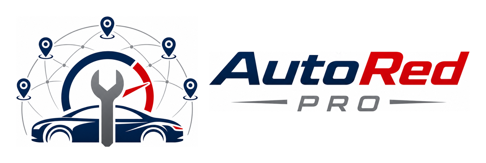

Red certificadaTu auto, en manos de talleres certificados y con evidencia de todo.
AutoRed Pro conecta a dueños de vehículos con talleres verificados que trabajan con presupuesto previo, autorización digital, evidencia en foto y video, reporte final y garantía.
Cifras simuladas para demostración.
Registro rápido del vehículo
Sin cuentas complicadas: tu teléfono, tu auto, y listo.
¿Qué le pasa a tu vehículo?
Elige el síntoma o el servicio. No necesitas saber de mecánica — el sistema sugiere posibles causas a revisar, nunca un diagnóstico definitivo.
Talleres sugeridos: especialidad
Sistema relacionado: — · Requiere diagnóstico — la selección de especialidad no sustituye la inspección técnica.
Taller
Posibles causas a revisar
Orientación inicial según tu síntoma. Requiere diagnóstico: no sustituye la inspección técnica del vehículo.
Cumplimiento verificado
- ✅ Auditoría vigente (mayo 2026)
- ✅ Presupuesto previo obligatorio
- ✅ Evidencia foto/video en cada servicio
- ✅ Área de espera y sanitario para clientes
- ✅ Técnicos capacitados
- ✅ Manejo responsable de residuos
Reseñas recientes
Solicitud de diagnóstico
El taller revisará tu vehículo y te enviará un presupuesto antes de tocar nada. Ningún trabajo se realiza sin presupuesto y autorización del cliente.
Resumen de tu solicitud
| Vehículo | — |
| Síntoma | — |
| Sistema relacionado | — (posible, a confirmar en diagnóstico) |
| Descripción | — |
| Adjuntos | 1 foto · 1 video |
| Taller | — |
¿Cuándo lo llevas?
Intervenciones externas (obligatorio en recepción)
"¿Desde el último servicio registrado el vehículo recibió alguna revisión, reparación, modificación o mantenimiento fuera de AutoRed Pro?"
Presupuesto digital FOLIO
Basado en los hallazgos del diagnóstico (no en el síntoma). Marca lo que autorizas: puedes aprobar todo o solo una parte.
Hallazgos del diagnóstico
Números de parte y compatibilidades demostrativos: requieren validación técnica por modelo.
Autorización del cliente
Tu autorización queda registrada con fecha, hora y folio.
| Presupuesto | — |
| Partidas autorizadas | — |
| Total a pagar | $0 (pago al entregar: efectivo o transferencia) |
| Garantía | — |
Seguimiento del servicio ORDEN OT-2026-0512
—
Bitácora de trazabilidad
Cada evento registra fecha/hora, actor, etapa, evidencia, cambio de estado y folio. Historia verificable de la orden.
Reporte final y garantía
Reporte del servicio · OT-2026-0512
| Vehículo | — |
| Trabajos | — |
| Refacciones | — |
| Pruebas de calidad | — |
| Técnico | — |
| Recomendación | — |
| Total pagado | $0 · efectivo · recibo folio R-1188 |
Evidencia antes / después
Refacciones y números de parte demostrativos; requieren validación técnica.
🛡️ Garantía registrada
—
📖 Historial del vehículo
Expediente portable: útil para reventa y seguros.¿Cómo quedó todo?
Ayúdanos con 6 preguntas rápidas (1 minuto).
11 · Consolidación del Expediente Técnico
La orden termina, pero el expediente permanece. Al cerrar correctamente, esta información validada se incorpora al Expediente Técnico permanente del vehículo:
Panel del taller — Hermanos Ruiz
Martes 13 · 6 órdenes activas · ★ ORO
Bitácora de la orden activa (OT-2026-0512)
Islas de trabajo — Hermanos Ruiz
Una isla es una bahía, estación o conjunto de equipo donde se ejecuta un trabajo. La orden, el técnico y la isla quedan conectados en la trazabilidad.
Cola de trabajos por asignar
Una isla "Disponible" con cola pendiente se marca como tiempo ocioso; una isla esperando refacción o autorización se marca como bloqueada.
Bitácora de islas
Administración de la red — Certificación
Talleres de la zona piloto · corte al 13 de julio
| Taller | Nivel | Score auditoría | Evidencia | Quejas/10 | Próxima auditoría | Estado |
|---|---|---|---|---|---|---|
| Hermanos Ruiz | ORO | 94 | 98% | 0.3 | Oct 2026 | Activo |
| Frenos y Clutch García | PLATA | 86 | 93% | 0.6 | Sep 2026 | Activo |
| ElectroAuto Domínguez | ORO | 91 | 96% | 0.4 | Nov 2026 | Activo |
| Transmisiones Núñez | ORO | 90 | 95% | 0.2 | Dic 2026 | Activo |
| Radiadores Palma | PLATA | 84 | 92% | 0.5 | Sep 2026 | Activo |
| MecaExpress | BRONCE | 78 | 88% | 1.1 | Ago 2026 | Plan de mejora |
| Servicio El Compa | EN PROCESO | — (semáforo 🟡) | 71% | — | Pend. etapa 3 | Provisional |
| Taller Rápido Sur | — | — (semáforo 🔴) | — | — | — | En adecuación |
⚠️ Alertas de cumplimiento
📅 Agenda del certificador
Programa de Adecuación de Talleres
Del taller común al taller certificado: semáforo, plan por etapas y avance 30/60/90.
Servicio El Compa EN PROCESO 🟡
Pre-evaluado: 12/jun · Paquete Intermedio · Asesor: L. MedinaBrechas pendientes (diagnóstico)
- Etapa 3 Adoptar presupuesto digital en el 100% de los servicios (hoy: 60%)
- Etapa 4 Scanner OBD propio (hoy renta por evento)
- Etapa 5 Curso de frenos certificado para 2 técnicos
"No necesitas tener el taller perfecto para empezar; necesitas un plan claro para llegar al estándar."
Voz del Cliente
Quejas, sugerencias, NPS y percepción calidad-precio de la red · últimos 30 días
Bandeja de entrada (clasificada por el motor de riesgos)
Encuesta post-servicio (vista del cliente)
Flujo de atención de quejas
Motor de riesgos · clasifica una opinión (demo)
¿Por qué se clasificó así?
Configura el caso y presiona "Clasificar". Verás la categoría, las reglas activadas y la acción recomendada.
Catálogo y frecuencia de vehículos
Familias por rangos de años · la prioridad regional es editable y demostrativa, no una estadística definitiva: se calibra con René y con las búsquedas reales del piloto.
Vehículos más seleccionados (demo + sesión)
Marcas frecuentes
Búsquedas sin resultado
Capturas manuales pendientes de normalizar
Prioridad regional editable (muestra) y modelos a validar con René
Expediente Técnico del Vehículo ARP-VEH
—
Un trabajo documentado por AutoRed Pro y algo mencionado de memoria por el cliente no tienen la misma confiabilidad; las etiquetas conservan esa diferencia.
Identificación
Continuidad y calidad (indicadores demostrativos)
Línea de vida del vehículo
Recomendaciones pendientes y mantenimientos futuros
Garantías y reaperturas
Reapertura por garantía · evaluación con intervención externa (demo)
Cliente y fidelización (sin juicios, solo continuidad)
Control de integridad de la orden OT-2026-0512
Puertas de calidad: el sistema no permite avanzar de etapa con datos indispensables faltantes. Un dato puede ser desconocido con razón formal, pero nunca simplemente vacío.
Estados de integridad
Categorías formales para información no disponible: Se desconoce · Cliente no respondió · Cliente no recuerda · No aplica · Pendiente de confirmar · No fue posible obtener el dato. Una ausencia de información nunca se convierte en una afirmación.